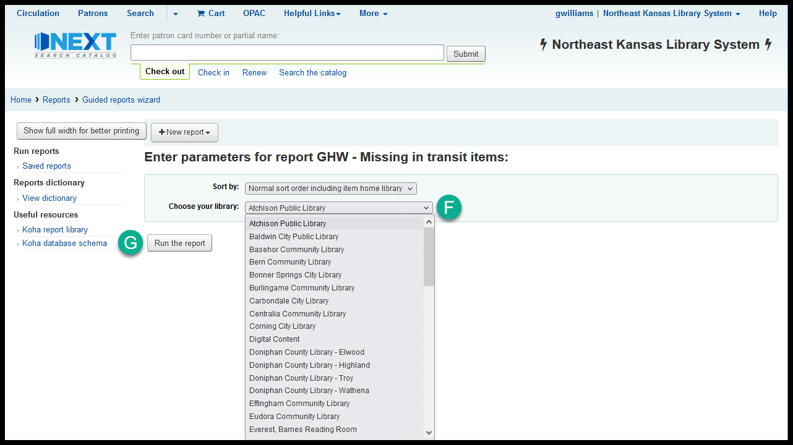
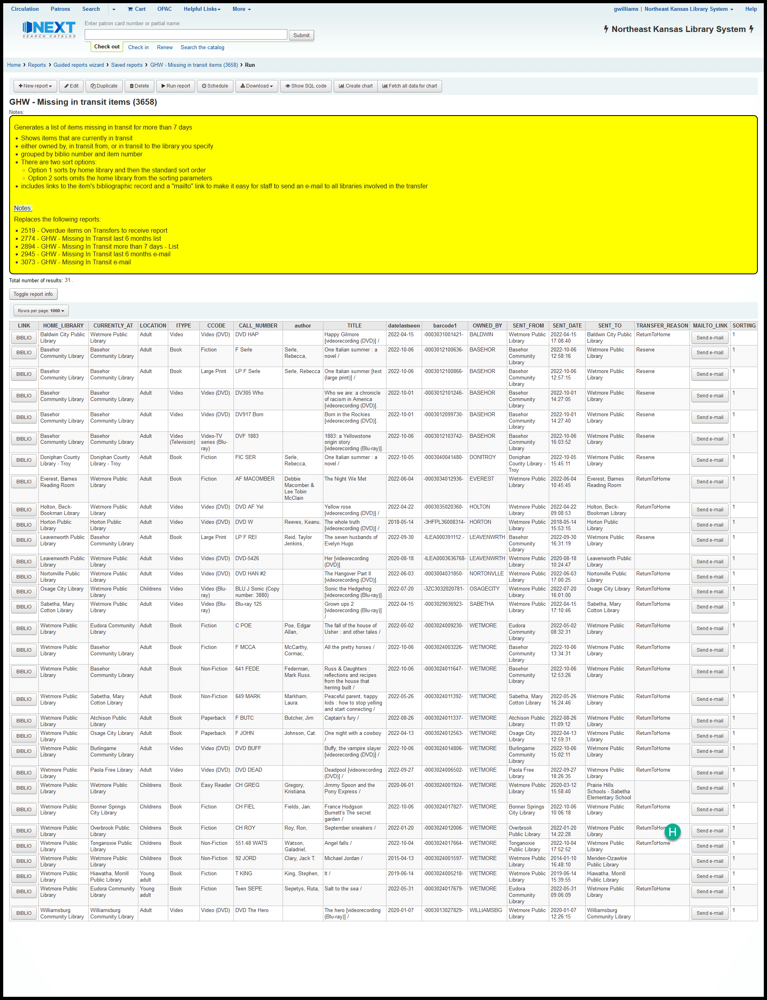

Report 3658 - Missing in transit items
Purpose
The purpose of this report is to help staff at member libraries find materials that have been missing in transit for more than 7 days.
The best practice for finding materials that are missing in transit is to run report 3658 once a week and then:
- Search for all of the items at your library - checking in any items you find
- E-mailing the other libraries involved in the transfer about the items you don’t find and asking them to do a shelf check
- Contacting the courier coordinator at NEKLS following the courier guidelines when necessary
- Marking un-found items as “Missing (unable to locate on shelf)” after all attempts by all libraries and the courier have failed
Function
This report generates a list of items that have been in transit from one library to another for more than 7 days.
The report will show you results for:
- All items owned by the selected library
- All items in transit to the selected library
- All items in transit from the selected library
This report includes a “mailto:” button. If you click on the “Send e-mail” button and you have a default e-mail client set up on your computer, the report will auto-populate an e-mail that you can send to the owning, sending, and receiving libraries asking them to check their shelves for the in-transit item.
Running the report
Follow the normal steps for finding the report
See Finding a report by number if you don’t know how to find a report by number.
You will be asked to choose a sort order
“Normal sort order including home library” (this is the default sort order) sorts the results by:
- Home library
- Permanent location
- Item type
- Collection code
- Call number
- Author
- Title
“Normal sort order without item home library” sorts the results by:
- Permanent location
- Item type
- Collection code
- Call number
- Author
- Title
Sorting without the home library creates a shelf-list that may be easier for staff to print and use when searching the shelves at your library.

You must choose a library to run this report - after you’ve chosen a library, click “Run the report”

Click on “Send e-mail” to send the item data to the owning library, sending library, and receiving library
This feature will only work if you have a default e-mail program set up on the computer you’re using.
